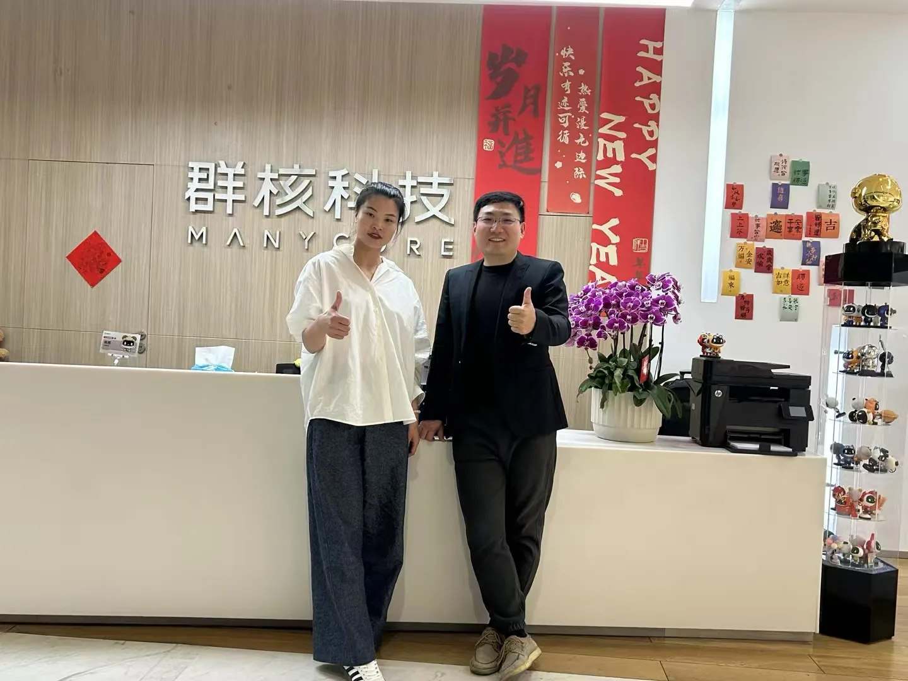
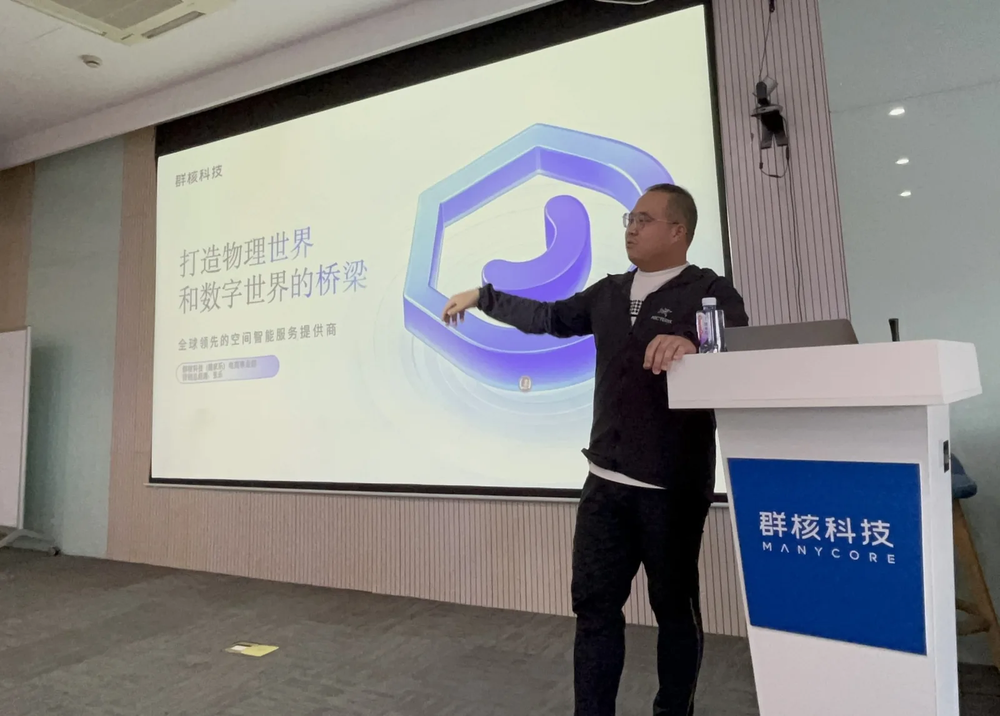

过去两年，我先后组织或联办了三四次走进群核科技的企业游学与调研。
每一次去，我看到的群核科技，似乎都不太一样。
第一次走进这家公司时，很多人认识它，是因为"酷家乐"。后来再去，我们开始讨论空间智能、AI、数字化营销与全球化。到今年4月17日，群核科技以00068.HK登陆港交所，成为杭州科技"六小龙"中首家上市企业。
但真正让我想写下这篇手记的，并不是它上市了。
而是一次次见面之后，群核科技一位事业部总经理，也成了 WTC One Club 里大家熟悉的面孔。
我突然觉得，这件事情值得记录下来。
因为它让我再次确认：真正有价值的商业关系，很少发生在第一次见面的时候。
一家企业，为什么值得一去再去？
“我见过不少企业，一次参访之后就没有了下文。群核科技不一样——每一次走进去，你都会看到一家和上次不太一样的公司。”
—— 董立鑫，新加坡世贸 秘书长兼首席运营官我这些年一直在做一件看起来很简单的事情：带着不同背景的企业家、创业者和管理者，走进那些真正值得研究的企业。
但企业游学最容易变成什么？
参观、听分享、合影，然后离开。
我越来越不满足于这样的连接。
我更希望大家走进一家企业以后，能够看到它正在经历什么、为什么这样选择，以及这些选择背后的企业家和组织。
群核科技就是这样一家值得反复看的企业。
过去两年，我们三四次走进这里，每一次讨论的主题并不完全相同。有人关心产品，有人关心AI，有人关心数字化营销，有人关心企业全球化。
而我最感兴趣的是：一家企业如何在不断变化的技术和产业环境中，持续寻找自己的下一条曲线。
群核科技从空间设计软件出发，逐渐向空间智能延伸。公开资料显示，它正在将AI、GPU算力和空间数据等能力用于真实物理空间的模拟，并探索设计、工业、3D内容和具身智能等场景。
所以每一次走进去，我们看到的都不是同一家公司。

从"参访一家企业"，到"认识一群人"
今年5月，我们再次来到群核科技。
这一次，50余位企业家、高管和创业者走进杭州总部，围绕空间智能、数字化营销与全球化展开交流。
我很喜欢这种交流方式。
不是一家企业站在台上告诉大家"我们有多厉害"，而是一群真正经营企业的人，带着各自的问题走进来。
有人从群核科技身上看到AI，有人看到产品，有人看到全球化，有人看到组织能力，也有人开始重新思考自己所在行业的数字化可能性。
同一家企业，不同的人会看到完全不同的东西。
而这恰恰是企业家之间交流最有价值的地方。
一次参访，可以认识一家企业；反复走进，才有机会真正认识一群人。

两年之后，一个意外的注脚
今年群核科技登陆港交所以后，很多人开始从资本市场重新认识这家公司。
但对我而言，更有意思的是另外一件事。
群核科技一位事业部总经理，在经历了几次交流之后，也成了 WTC One Club 里大家熟悉的面孔。
这件事情让我很有感触。
因为我并不认为，一个人参加一次活动之后加入一个俱乐部，就足以证明什么。
但如果两年里见过几次，交流过几次，看着彼此所在的企业不断变化，最后对方主动选择走近这个圈子——这背后验证的，已经不是某一场活动，而是一种长期连接。
我越来越相信，商业世界里有一种关系，比一次合作更加重要。
就是彼此愿意持续见面。
你不一定第一次见面就谈合作，甚至不一定每一次见面都有明确的商业结果。
但你会知道他在做什么，他也开始理解你在关注什么；你看见他的企业从一个阶段走到下一个阶段，他也逐渐理解你为什么持续在连接这些人。
时间会筛掉很多关系，也会留下真正有价值的关系。
这也是我理解的 WTC One Club
所以，对我而言，这次加入并不是简单的一位会员新增。
它更像是一个答案。
WTC One Club真正想连接的，从来不应该只是一张越来越大的通讯录，而是一群正在真实经营企业、推动产业、走向全球的人。
群核科技是杭州科技"六小龙"中的一个重要样本。它从杭州出发，从空间设计切入，在长期技术积累中走向空间智能，又在今年进入港股市场。
而我们更关心的是：下一阶段，它还会走到哪里？
同样，我们也希望认识更多正在寻找下一条增长曲线、正在走向全球市场的人。
这些人未必第一次见面就会产生合作。
但他们值得认识。
值得再次见面。
值得在更长的时间里保持连接。
写在最后
过去两年，我带着不同的企业家走进群核科技三四次。
回头看，我越来越觉得，我真正想做的并不是"带大家参观几家公司"。
我更希望通过一次次真实的走进、交流和碰撞，让原本值得认识的人，有机会真正认识彼此。
有时候，一次见面产生不了什么。
但见过第二次、第三次，甚至两年以后，你会发现，关系开始发生变化。
这一次，群核科技这位事业部总经理，也成了 WTC One Club 里大家熟悉的面孔。
对我来说，这不是一个简单的结果。
它更像是一种确认：
好的俱乐部，不是把尽可能多的人聚在一起，而是让原本值得认识的人，因为一次次真实的连接，最终走到了一起。
这也是我一直在做、也愿意继续做下去的事情。